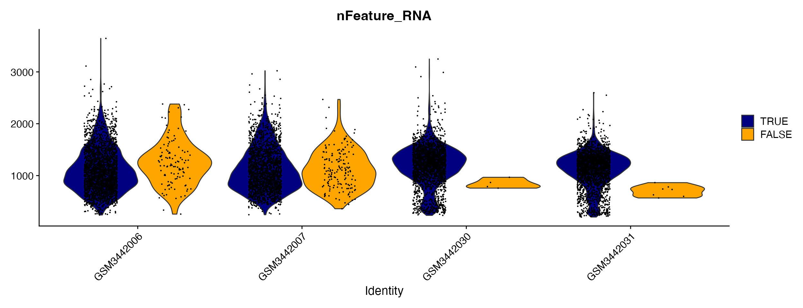
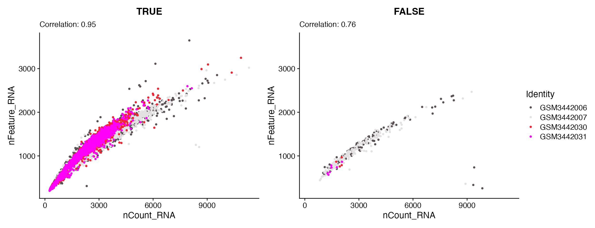
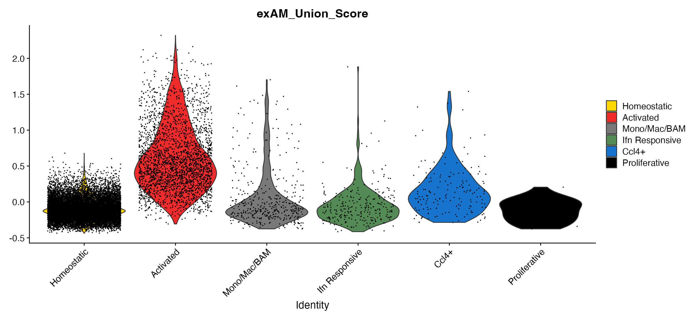

vignettes/articles/Object_QC_Functions.Rmd
Object_QC_Functions.RmdscCustomize has several helper functions to simplify/streamline what is nearly always the first and most critical choices when starting an analysis: performing quality control and filtering.
Let’s load packages and raw data object for this tutorial.
# Load Packages
library(ggplot2)
library(dplyr)
library(magrittr)
library(patchwork)
library(Seurat)
library(scCustomize)
pbmc <- pbmc3k.SeuratData::pbmc3k
hcabm <- hcabm40k.SeuratData::hcabm40kWe’ll add some random meta data variables to pbmc data form use in this vignette
pbmc$sample_id <- sample(c("sample1", "sample2", "sample3", "sample4", "sample5", "sample6"), size = ncol(pbmc),
replace = TRUE)
pbmc$batch <- sample(c("Batch1", "Batch2"), size = ncol(pbmc), replace = TRUE)All of scCustomize’s functions to add quality control metrics are 100% cross compatible across Seurat and LIGER objects using the same function calls. For more details on QC-specific plotting functions see QC Plotting & Analysis Vignette.
Additionally, all of the QC functions support objects that use either gene symbols or Ensembl IDs. Ensembl IDs for default species (see below) are from Ensembl version 112 (updated in scCustomize on 4/29/2024).
If your object using ensembl IDs as features names then simply add
ensembl_ids parameter that is present in all QC
functions.
# Using gene name patterns
obj <- Add_Cell_QC_Metrics(object = obj, species = "Human", ensembl_ids = TRUE)Many of the QC functions commonly performed depend on genes within a
particular family that have similar naming patterns (e.g., Mitochondrial
genes) or are species specific (see msigdb dependent parts of
Add_Cell_QC_Metrics()).
To simplify the process of needing to remember species-specific patterns (or find Ensembl ID gene lists)
If you are using mouse, human, marmoset, zebrafish, rat, drosophila,
rhesus macaque, or chicken data all you need to do is specify the
species parameter in the functions described below using
one of the following accepted names.
| Mouse_Options | Human_Options | Marmoset_Options | Zebrafish_Options | Rat_Options | Drosophila_Options | Macaque_Options | Chicken_Options | |
|---|---|---|---|---|---|---|---|---|
| 1 | Mouse | Human | Marmoset | Zebrafish | Rat | Drosophila | Macaque | Chicken |
| 2 | mouse | human | marmoset | zebrafish | rat | drosophila | macaque | chicken |
| 3 | Ms | Hu | CJ | DR | RN | DM | Rhesus | Gallus |
| 4 | ms | hu | Cj | Dr | Rn | Dm | macaca | gallus |
| 5 | Mm | Hs | cj | dr | rn | dm | mmulatta | Gg |
| 6 | mm | hs | NA | NA | NA | NA | NA | gg |
However custom prefixes can be used for species with different
annotations. Simply specify species = other and supply
feature lists or regex patterns for your species of interest. NOTE:
If desired please submit issue on GitHub for additional default species.
Please include regex pattern or list of genes for both mitochondrial and
ribosomal genes and I will add additional built-in defaults to the
function.
# Using gene name patterns
pbmc <- Add_Cell_QC_Metrics(object = pbmc, species = "other", mito_pattern = "regexp_pattern_mito",
ribo_pattern = "regexp_pattern_ribo")
# Using feature name lists
mito_gene_list <- c("gene1", "gene2", "etc")
ribo_gene_list <- c("gene1", "gene2", "etc")
pbmc <- Add_Cell_QC_Metrics(object = pbmc, species = "other", mito_features = mito_gene_list, ribo_features = ribo_gene_list)
# Using combination of gene lists and gene name patterns
pbmc <- Add_Cell_QC_Metrics(object = pbmc, species = "other", mito_features = mito_gene_list, ribo_pattern = "regexp_pattern_ribo")
To simplify the process of adding cell QC metrics scCustomize
contains a wrapper function which can be customized to add all or some
of the available QC metrics. This vignette will describe each of these
in more detail below but using the default parameters of the function
Add_Cell_QC_Metrics() will add:
pbmc <- Add_Cell_QC_Metrics(object = pbmc, species = "human")## • Adding Mito/Ribo Percentages to meta.data.
## Adding Percent Mitochondrial genes for human using gene symbol pattern: "^MT-".
## Adding Percent Ribosomal genes for human using gene symbol pattern: "^RP[SL]".
## Adding Percent Mito+Ribo by adding Mito & Ribo percentages.
## • Adding Cell Complexity #1 (log10GenesPerUMI) to meta.data.
## • Adding Cell Complexity #2 (Top 50 Percentages) to meta.data.
## Calculating percent expressing top 50 for layer: counts
## • Adding MSigDB Oxidative Phosphorylation, Apoptosis, and DNA Repair
## Percentages to meta.data.
## • Adding IEG Percentages & IEG Module Score to meta.data.
## • Adding Hemoglobin Percentages to meta.data.
## Adding Percent Hemoglobin for Human using gene symbol pattern: "^HB[^(P)]".
## • Adding lncRNA Percentages to meta.data.
## • Adding Cell Cycle Scoring to meta.data.
## Calculating Cell Cycle Scores.If you only want to add some but not all metrics you can either
customize Add_Cell_QC_Metrics or use the individual
functions.
If you just want to calculate and add mitochondrial and ribosomal
count percentages per cell/nucleus you can use
Add_Mito_Ribo.
Add_Mito_Ribo()
scCustomize contains easy wrapper function to automatically add both
Mitochondrial and Ribosomal percentages to meta.data slot. If you are
using mouse, human, marmoset, zebrafish, rat, drosophila, rhesus
macaque, or chicken data all you need to do is specify the
species parameter.
# These defaults can be run just by providing accepted species name
pbmc <- Add_Mito_Ribo(object = pbmc, species = "human")Some analyses are performed with cells aligned to a genome that contains multiple species (see Cell Ranger/10X documentation for more info). scCustomize now supports adding mitochondrial and ribosomal percentages for these datasets using optional parameters. Here we will use example data provided by 10X Genomics here.
pbmc_dual_species <- Read10X_h5(filename = "~/Downloads/10k_hgmm_3p_gemx_Multiplex_count_raw_feature_bc_matrix.h5")
pbmc_dual_species <- CreateSeuratObject(counts = pbmc_dual_species, min.cells = 5, min.features = 500)For dual species analyses the only other information you need to provide is what the prefixes are used in front of gene IDs. In this case the prefixes are “GRCh38-” and “GRCm39-”.
pbmc_dual_species <- Add_Mito_Ribo(object = pbmc_dual_species, species = c("human", "mouse"), species_prefix = c("GRCh38-",
"GRCm39-"))The added benefit of Add_Mito_Ribo is that it will
return informative warnings if no Mitochondrial or Ribosomal features
are found using the current species, features, or pattern
specification.
# For demonstration purposes we can set `species = mouse` for this object of human cells
pbmc <- Add_Mito_Ribo(object = pbmc, species = "mouse")## Error in `Add_Mito_Ribo()`:
## ! Columns with "percent_mito" and/or "percent_ribo" already present in
## meta.data slot.
## ℹ *To run function and overwrite columns set parameter `overwrite = TRUE` or
## change respective `mito_name`, `ribo_name`, and/or `mito_ribo_name`*
# Or if providing custom patterns/lists and features not found
pbmc <- Add_Mito_Ribo(object = pbmc, species = "other", mito_pattern = "^MT-", ribo_pattern = "BAD_PATTERN")## Warning: No Ribo features found in object using pattern/feature list provided.
## ℹ No column will be added to meta.data.## Adding Percent Mitochondrial genes for other using gene symbol
## pattern: "^MT-".Add_Mito_Ribo will also return warnings if columns are
already present in @meta.data slot and prompt you to
provide override if you want to run the function.
pbmc <- Add_Mito_Ribo(object = pbmc, species = "human")## Error in `Add_Mito_Ribo()`:
## ! Columns with "percent_mito" and/or "percent_ribo" already present in
## meta.data slot.
## ℹ *To run function and overwrite columns set parameter `overwrite = TRUE` or
## change respective `mito_name`, `ribo_name`, and/or `mito_ribo_name`*In addition to metrics like number of features and UMIs it can often be helpful to analyze the complexity of expression within a single cell. scCustomize provides functions to add two of these metrics to meta data.
scCustomize contains easy shortcut function to add a measure of cell complexity/novelty that can sometimes be useful to filter low quality cells. The metric is calculated by calculating the result of log10(nFeature) / log10(nCount).
# These defaults can be run just by providing accepted species name
pbmc <- Add_Cell_Complexity(object = pbmc)Additionally, (or alternatively), scCustomize contains another metric
of complexity which is the top percent expression. The user supplies an
integer value for num_top_genes (default is 50) which
species the number of genes and the function returns percentage of
counts occupied by top XX genes in each cell.
# These defaults can be run just by providing accepted species name
pbmc <- Add_Top_Gene_Pct(object = pbmc, num_top_genes = 50)scCustomize also contains function to add percentage of counts for hemoglobin genes. Use of this metric is much more situational. If your experiment has the potential for red blood cell contamination but you want to avoid that then this can be helpful. A high percentage of hemoglobin counts may indicate that your sample has high amount of ambient RNA present or RBCs in the cells captured.
pbmc <- Add_Hemo(object = pbmc, species = "human")In addition to those standard QC metrics it can be helpful when using networ- based QC analysis to add the percent of expression of genes related to common pathways. This function and the network-based analysis is further extension of the analysis/QC from our recent publication: Gazestani & Kamath et al., 2023 (Cell).
In scCustomize the percent of gene expression from the following gene
lists can be added as part of the Add_Cell_QC_Metrics:
Another QC metric that has been proposed is based on the level of
expression of long non-coding RNA MALAT1 (Clarke &
Bader, 2024). Their analysis demonstrates that low MALAT1
expression is characteristic of low quality cells and created function
to determine a cutoff threshold to call low quality/damaged cells. Their
metric has now been incorporated into scCustomize as
Add_MALAT1_Threshold.
NOTE: If you utilize this function please cite the above manuscript in addition to scCustomize).
NOTE: This function is currently only available for human and mouse as those are only species with MALAT1 annotated. See section below on non-default species for more info.
For best results this function should be run on per sample basis using normalized count matrix. To get started all the function requires is Seurat Object, the species being analyzed, and the name of meta.data column that contains sample ID information.
For this example we are going to use a subset of data from Hammond et al., 2019.
hammond_subset <- Add_MALAT1_Threshold(object = hammond_subset, species = "mouse", sample_col = "orig.ident")## • Adding MALAT1 Threshold for mouse using gene id: "Malat1".
## ℹ Please cite Clarke & Bader (2024). doi.org/10.1101/2024.07.14.603469 when
## using MALAT1 thresholding function.
## Calculating thresholds across 4 samples from meta.data column orig.ident.
## A total of 280 cells (3%) fall below the threshold.
## Adding results to object as "Malat1_Threshold".NOTE: The function is also compatible with Ensembl IDs by
specifying ensembl_ids = TRUE in function
call.
If your Seurat object only has a single sample or you want to run the
calculation across the entire object then you can supply the optional
parameter of whole_object = TRUE.
hcabm <- Add_MALAT1_Threshold(object = hammond_subset, species = "mouse", whole_object = TRUE)Currently, humans and mice are the only species for which MALAT1 has
been annotated in the genome. If your analysis includes annotation of
MALAT1 homolog/paralog in new species you can supply that value to
optional parameter homolog_name.
hcabm <- Add_MALAT1_Threshold(object = OBJECT, species = "marmoset", homolog_name = "MALAT1_HOMOLOG_SYMBOL_OR_ID_NUMBER")The function will calculate the threshold for each sample and adds new column to meta.data containing logical value (TRUE/FALSE) designating cells above or below the threshold. This can then be visualized as any meta.data column.
VlnPlot_scCustom(seurat_object = hammond_subset, features = "nFeature_RNA", split.by = "Malat1_Threshold")
FeatureScatter_scCustom(seurat_object = hammond_subset, feature1 = "nCount_RNA", feature2 = "nFeature_RNA",
split.by = "Malat1_Threshold", pt.size = 1)
In addition to basic parameters there are several optional parameters
that can be invoked. The first set relate to a series of plots the are
created when determining the threshold. For detailed description of
these plots and their interpretation please see Clarke & Bader
GitHub Repo. The optional parameters within scCustomize are:
- print_plots whether or not to print plots to output while
running function (default is FALSE).
- save_plots whether or not to save plots to PDF file while
running function (default is FALSE).
- save_plot_path directory path to save the plots.
- save_plot_name file name for PDF document with
plots.
- plot_width plot width (inches) - plot_height
plot height (inches)
hcabm <- Add_MALAT1_Threshold(object = hammond_subset, species = "mouse", sample_col = "orig.ident",
save_plots = TRUE, save_plot_path = "plots/QC_Plots/", save_plot_name = "MALAT1_Threshold_Plots")sample_names parameter.
Finally, there are also a series of parameters of the MALAT1 function
itself that can be modified. For deeper description of parameters below
please see manual documentation for Add_MALAT1_Threshold()
and above mentioned manuscript: bw, lwd,
breaks, chosen_min, smooth,
abs_min, rough_max.
In Marsh et al., 2022 (Nature
Neuroscience) we identified sets of genes that were
differentially expressed in samples that were processed with enzymatic
digestion or in post-mortem human samples compared to fresh tissue (see
paper for full details). Module scores for these gene sets can be added
to Seurat object using function exAM_Scoring.
To demonstrate this function we will use data objects from Marsh et al., 2022.
# Load Marsh et al., 2022 datasets
marsh_mouse_micro <- qs::qread(file = "assets/marsh_2020_micro.qs")
marsh_human_pm <- qs::qread(file = "assets/marsh_human_pm.qs")If adding score to human data both the union score and “microglia” (post-mortem) score will be added to be meta.data slot. When species is mouse only the union score will be added. When the function is run the name of the column added to meta.data slot will be included printed in message.
marsh_mouse_micro <- exAM_Scoring(seurat_object = marsh_mouse_micro, species = "mouse")## ℹ Please cite Marsh et al., (2022). doi.org/10.1038/s41593-022-01022-8 when
## using exAM Scoring function.
## Adding module score for exAM union gene list as “exAM_Union_Score”.
marsh_human_pm <- exAM_Scoring(seurat_object = marsh_human_pm, species = "human")## ℹ Please cite Marsh et al., (2022). doi.org/10.1038/s41593-022-01022-8 when
## using exAM Scoring function.
## Adding module score for exAM union gene list as “exAM_Union_Score”.
## Adding module score for exAM Microglia Factor gene list as
## “exAM_Microglia_Score”.exAM_Scoring also supports use of ensembl IDs by
specifying optional parameters.
marsh_mouse_micro <- exAM_Scoring(seurat_object = marsh_mouse_micro, species = "mouse", ensembl_ids = TRUE)
DimPlot_scCustom(seurat_object = marsh_mouse_micro, colors_use = marsh_mouse_micro@misc$exp17_micro_colors,
label.size = 5, pt.size = 0.5, repel = T)
FeaturePlot_scCustom(seurat_object = marsh_mouse_micro, features = "exAM_Union_Score", na_cutoff = NA,
pt.size = 0.5)A. tSNE plot showing the clusters from Marsh et al., 2022. B. FeaturePlot_scCustom view of the module score showing expected localization in the “Activated” exAM cluster.
VlnPlot_scCustom(seurat_object = marsh_mouse_micro, features = "exAM_Union_Score", colors_use = marsh_mouse_micro@misc$exp17_micro_colors)